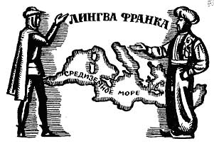

ЗАКОНЫ РАЗВИТИЯ ЯЗЫКА
I. Внутренние законы развития языка:
1. Закон эволюционного развития языка.
2. Закон неравномерного развития уровней языка.
3. Закон аналогии.
4. Закон экономии языковых средств.
5. Законы абстрагирования и дифференциации.
II. Внешние законы развития языка:
1. Взаимодействие языков.
2. Изменение в общественном строе.
3. Сознательное воздействие общества на язык.
4. Прогресс в науке, технике, образовании, культуре.
Ни один язык не остается неизменным. Лингвистика исследует развитие языка, для того чтобы получить ответы на самые разнообразные вопросы: Изменение языка ведет к его совершенствованию или порче? Какими темпами изменяется язык? Что влияет на изменение языка? Каковы законы его развития? Можно ли, опираясь на знание этих закономерностей, предсказать будущее языка?
C какой скоростью меняется язык? Лингвисты (С.А. Старостин) считают, что за тысячу лет сменяется примерно 5% слов, за 200 лет из базисной лексики (список Сводеша) уходит одно слово, небазисная лексика меняется быстрее.
Развитие языка объясняется рядом факторов, закономерностей, называемых законами.
Законы развития языка - постоянные и закономерные тенденции в развитии языка. Различают законы внешние - факторы, влияющие на язык извне, и внутренние стимулы его эволюции, связанные с особенностями языковой системы.
I. ВНУТРЕННИЕ ЗАКОНЫ РАЗВИТИЯ ЯЗЫКА
Внутренние законы развития языка -
законы, отражающие процесс развития языка, обусловленный самой его природой. Помимо общих законов, распространяющихся на любой язык (например, закон эволюционного развития языка), существуют внутренние законы развития отдельных языков - их словарного состава, фонетической системы, грамматического строя. Например, закон оглушения звонких согласных на конце русского слова не действует в английском языке.Рассмотрим главные внутренние закономерности, управляющие развитием любого языка.
1. Закон эволюционного развития языка
Закон эволюционного развития языка
- это длительное сохранение устойчивости и единства основы языка, постепенное накопление элементов нового качества и отмирание элементов старого качества. В языке невозможны революции, и даже реформы касаются только самых формальных его сторон (например, орфографии) и требуют серьезных усилий. Язык изменяется постепенно, в нем существует историческая преемственность между старым и новым. И если мы откроем языковые памятники XVII века, то мы поймем смысл написанного триста лет назад.
2. Закон неравномерного развития уровней языка
Разные уровни языка изменяются с разной скоростью. Наиболее активным изменениям подвержена лексика, так как она теснее всего связана с обществом, его развитием. Словарь свидетельствует о том, как идет освоение природы, накопление знаний о мире, совершенствование жизни общества.
На втором месте по темпам изменения стоит орфоэпия, отражающая нормы произношения. Это связано с тем, что устная речь является ведущей деятельностью человека. Изменение орфоэпических норм происходит буквально на наших глазах. Например, у Пушкина читаем: "Гремит муз
`ыка полковая…", а мы говорим м`узыка.Гораздо медленнее меняются другие уровни языка: фонетический и грамматический. Кардинальные изменения в фонетике происходят примерно раз в тысячелетие. Так, в X-XI веках произошло падение (исчезновение) редуцированных гласных: день –> дьня –> дня. Это повлекло за собой возникновение новых фонетических закономерностей, например, оглушение согласного перед глухим и на конце слова: сказъка –> сказка, рабъ –> раб.
В морфологии серьезные изменения произошли в XIII-XIV веках: опростилась система склонений (было пять, осталось три), исчез звательный падеж (Чего тебе надобно, старче
?), упразднилось двойственное число, и его формы воспринимаются сегодня как множественное число (ед.ч. глаз, дв.ч. два глаза, мн.ч. глазы).
3. Закон аналогии
Это один из важнейших внутренних законов развития языка, изменения его норм. Аналогия (от греч.
analogia - соответствие) - уподобление одних элементов языка другим, образующим более продуктивную и более распространенную модель. Встречаются образования по аналогии, изменения по аналогии, распространение по аналогии. Так, благодаря аналогии приобретают один общий вид морфемы, разошедшиеся вследствие фонетических изменений в своем звуковом оформлении. Например, современные формы дательного падежа руке, ноге, восходящие к древнерусским "роуце, нозе" с чередованием конечного согласного [к], [г] основы (ср.: рука, нога), образовались по аналогии с более продуктивной моделью нора - норе, в которой чередования согласных основы не было. У глагола икать вместо прежней формы "ичу" появилась в литературном языке форма икаю по аналогии с продуктивным классом глаголов типа читать - читаю. Орфоэпическая ошибка в слове зв`онит объясняется его уподоблением глаголам возит, ходит и др.
4. Закон экономии языковых средств
Закон экономии языковых средств
- стремление говорящего экономить усилия при пользовании речью. Это находит свое выражение на всех ярусах языковой системы: в фонетике, словообразовании, морфологии, синтаксисе. В фонетике "закон наименьшего усилия" проявляется, например, в ассимиляции по звонкости-глухости: произношение [зб]росить, [зг]оpemь, ска[ск]а, ла[фк]а требует меньше усилий, так как работа органов речи при произнесении соседних звуков похожа.В словообразовании тенденция к экономии находит свое выражение в широком распространении сложных слов (сложное слово - более экономное средство общения по сравнению со словосочетанием) и в обильном создании разного типа сложносокращенных слов, особенно аббревиатур.
В морфологии побеждают более короткие из сосуществующих форм (ср.: страной - страною, скорей - скорее, написав - написавши, свойствен - свойственен, лошадьми - лошадями, восьмью - восемью, среди башкир, туркмен - среди башкиров, туркменов и т. д.).
В синтаксисе экономию языковых средств можно обнаружить в односоставных, неполных предложениях, в опущении служебного слова (ср.: ценою в два рубля - ценою два рубля) и т. д.
5. Законы абстрагирования и дифференциации
Они уравновешивают друг друга. Один уменьшает количество структурных элементов, другой - увеличивает. Так, в результате абстрагирования все слова были поделены на группы - части речи. В результате дифференциации внутри наречий выделили еще одну часть речи - категорию состояния: мне грустно
.
II. ВНЕШИЕ ЗАКОНЫ РАЗВИТИЯ ЯЗЫКА
Внешние законы развития языка обусловлены его связью с обществом, влиянием неязыковых, экстралингвистических (от лат.
extra - вне + франц. linguistique - языковой) факторов. Основными факторами, под влиянием которых изменяется язык, являются: взаимодействие языков, изменение в общественном строе, сознательная деятельность общества и прогресс в науке, технике, образовании, культуре. Воздействие этих условий на язык различно по форме и по силе.
1. Взаимодействие языков
На Земле существует огромное количество больших и малых этносов, которые более или менее тесно взаимодействуют друг с другом. Соприкасаются и взаимодействуют также их языки и диалекты. Они могут (в силу географических, экономических, политических, культурных и прочих причин) сближаться друг с другом или, напротив, отдаляться друг от друга. Различают два вида взаимодействия языков: расхождение и схождение.
Эти противоборствующие тенденции тесно связаны друг с другом и на определенном этапе развития языка уступают друг другу место в зависимости от условий общения, но в принципе развитие того или иного языка никогда не сводится лишь к одному из этих двух направлений.
1). Расхождение,
дифференциация, (от лат. differentia - различие), дивергенция (divergere - расходящийся) - это постепенное накапливание различий и распадение одного языка на несколько родственных, т.е. превращение диалектов некогда одного языка в самостоятельные языки, обусловленное распадом языкового коллектива. Это основной путь образования семьи языков из праязыка. Это процесс центробежного развития родственных языков и диалектов одного языка-источника.Что же становится причиной распадения языка? Когда этнос занимает значительные территории, он дробится, расселяется, в результате внутри языка возникают говоры, диалекты, которые потом могут превратиться в самостоятельные языки, если различий накопилось много. Однако эти новые языки по рождению принадлежат к одному источнику - праязыку, который "разошелся" на несколько родственных языков, но в каждом из них сохраняются черты их общего предка.
О том, как далеко может заходить процесс дифференциации, может свидетельствовать пример Новой Гвинеи, где, по некоторым источникам, насчитывается несколько сотен языков. Подобное дробление можно наблюдать в Дагестане и на севере Азербайджана, где насчитывается 6 относительно крупных народов и 20 мелких (около 140 тысяч человек). Например, в селе Хиналуг около тысячи жителей говорят на особом хиналугском языке.
Процесс дифференциации - основной путь образования на месте одного праязыка семьи родственных языков.
Так, русский язык возник в результате дифференциации восточнославянского, или древнерусского языка, на котором в - XIII вв. говорили древние русы - восточные славяне. В XIV-XV веках он распался на великорусский (русский), белорусский и малоросский (сейчас украинский) языки. Но и сам восточнославянский язык - тоже результат дифференциации. Он возник при расхождении общеславянского языка. Этот язык просуществовал много столетий: со второй половины I тысячелетия до н.э. до VII века н.э. В VI-VII веках славянские племена расселились на огромных пространствах от Ильменя на севере до Греции на юге, от Оки на востоке до Эльбы на западе. Славяне разделились на южных,
западных и восточных, говоривших на восточнославянском языке.Если заглянуть вглубь истории, то мы узнаем, что предком общеславянского был индоевропейский праязык. В первой половине каменного века (III-IV тысячелетия до н.э.) индоевропейский праязык распределился по трем зонам: центральной, южной и северной. Вот из северной зоны (южнее реки Припять, между рекой Западный Буг и средним течением Днепра) и выделился общеславянский язык.
Дифференциации языков противопоставлена интеграция, или схождение языков.
2). Схождение, интеграция (от лат.
integratio - соединение с целое), конвергенция (convergere - сходящийся) - сближение, схождение языков на основе постепенного накапливания общих явлений в фонетике, лексике, грамматике.Понятие интеграции относят к центростремительным процессам, которые возникают при совместном проживании носителей разных языков и диалектов на одной территории, при их вхождении в одно и то же государственное образование, при их длительных и интенсивных контактах
. Конвергентные процессы могут затрагивать как родственные, так и неродственные языки, а также диалекты одного языка.Поразительное сходство многих тюркских языков есть результат кочевого (в прошлом) образа жизни народов. Главным занятием населения служило скотоводство, и кочевой образ жизни заставлял отдельные роды и племена сталкиваться друг с другом. Эти постоянные контакты и привели к интеграции языков.
Результатом интеграции может стать либо образование единого, общего языка, либо образование языкового союза.
Основными видами интеграции являются сосуществование, смешение и скрещивание языков.
Сосуществование языков - длительное и устойчивое взаимовлияние языков рядом живущих народов, в результате которого развиваются некоторые общие черты в языках. Результатом такого взаимодействия может стать языковой союз.
Языковой союз - ареально-историческая (а не генетическая) общность языков, приобретенная в результате длительного и интенсивного взаимодействия этих языков в пределах единого географического пространства.
Примером может служить Поволжский языковой союз, получивший свое название благодаря территории - Волге, - которая объединяла живущие рядом народы. Языки этих народов не являются родственными: марийский, удмуртский - это финно-угорские языки, а башкирский, татарский, чувашский - тюркские языки. Особенно интересен для исследователей Балканский языковой союз, охватывающий такие языки, как греческий, албанский, болгарский, македонский, частично сербскохорватский, румынский, молдавский, венгерский.
Большую роль в развитии языков играют культурно-языковые союзы, объединяющие языки с общим культурно-историческим прошлым, проявившимся в сходстве словаря (интернациональная лексика), систем письма, иногда грамматики. На земном шаре уже несколько веков существуют четыре больших культурно-языковых союза. Один охватывает языки Европы, другой - стран Азии и АФрики, где распространен ислам, третий союз - Индию и страны Юго-Восточной Азии, а четвертый - Китай, Корею, Японию и Вьетнам.
Европейский культурно-языковой союз складывался с первых веков н. э. и окончательно сформировался к XIV - XVII вв. Важную роль с его создании сыграли два мертвых сейчас языка: греческий и латинский.
Похожесть языков возникла в результате длительного тесного общения народов. В результате сосуществования языков образуется прослойка между ними - адстрат.
Адстрат (лат. аd - при +
stratum - слой, пласт) - усвоение некоторых черт другого языка при условии территориального соседства, сосуществовании. Например, в пограничных районах длительное двуязычие породило польский адстрат в белорусском языке.В истории языков мира языковые союзы не были редкостью, напротив, они играли важную роль в развитии контактирующих языков. Говорят о турецком адстрате в балканских языках, о тюркском адстрате в персидском и таджикском языках.
Второй разновидностью схождения языков является их смешение.
Смешение языков - взаимодействие, при котором два языка сталкиваются на своем историческом пути, оказывают друг на друга значительное влияние, а потом расходятся и продолжают существовать самостоятельно. Например, смешение русского и татарского языков в период татаро-монгольского ига, продлившегося более двухсот лет, оставило свой след в каждом из языков. Многие слова, прочно вошедшие в наш язык, являются по происхождению тюркскими: тулуп, сарай, карандаш.
В межэтническом общении в рамках того или иного государственного образования формируются такие средства общения, как койне, лингва франка, пиджин.
Койне - средство наддиалектного, надтерриториального общения, общий язык, возникший на основе смешения родственных языков или диалектов и служащий средством междиалектного общения разноязычных групп населения страны. Термин пошел от греческого слова koine (из
koine dialektos - общее наречие), так называли общенародный язык, возникший в Древней Греции в III - I вв. до н. э. на базе аттического и ионического диалектов и вытеснивший из употребления другие диалекты страны. В социолингвистике под койне понимают любые наддиалектные системы общения (прежде всего устного) в рамках всей страны, отдельного её региона и даже в ряде сопредельных стран.
Лингва франка
- устное средство межэтнического общения, которое не вытесняет из обихода другие языки, а сосуществует с ними на одной территории. Лингва франка (язык франков - так арабы называли европейцев) был смешанный язык Средиземноморья (смесь романских языков с примесью восточной лексики), используемый для торговли арабских и турецких купцов с европейцами. Сегодня в социолингвистике термин “лингва франка” имеет более широкое значение - язык межнационального общения. Чаще всего функцию лингва франка выполняет уже сформировавшийся язык, например, русский язык в странах СНГ, хауса в Западной Африке, суахили в Восточной Африке южнее экватора, малайский в Юго-Восточной Азии.К лингва франка близки тоже служащие межэтническому общению пиджины.
Пиджин - вспомогательный торговый язык в бывших колониальных странах. Эти языки не имеют коллектива исконных носителей, не является родным ни для кого. Они возникают в результате взаимодействия разнотипных языков и характеризуются весьма упрощённой структурой. Это средство общения туземцев между собой (прежде также и с колонизаторами). Пиджин-языки распространены в Океании, на Дальнем Востоке, в Западной Африке. Известны пиджины, сложившиеся на основе английского, французского, испанского, португальского языков.
Третьи видом схождения языков является скрещивание.
Скрещивание языков - взаимодействие языков, при котором один растворяется в другом, от двух языков-родителей рождается третий, новый язык. Это происходит, когда один народ поглощается другим, более многочисленным и сильным. Массовый переход с одного языка на другой, рождение нового языка предполагает длительный период двуязычия: люди одновременно пользуются средствами разных языков, вносят в один язык элементы другого. Примером скрещения может служить английский язык, являющийся в своей основе германским, но имеющий значительную примесь романских элементов.
Среди результатов скрещивания отмечается наличие в новом, едином языке так называемых субстратных или суперстратных черт. И субстрат и суперстрат - это элементы побежденного языка. Разница в том, кому принадлежит этот побежденный язык: местному населению или пришельцам.
Субстрат (от лат. sub - под + stratum - слой) - следы побежденного местного языка, вытесненного языком пришельцев-завоевателей.
О субстрате говорят тогда, когда в данном языке могут быть выделены материальные элементы или структурные особенности, восходящие к языку прежних обитателей данной территории, смешавшихся с завоевателями (пришельцами) и принявшими их язык. Так, латынь (язык Римской империи) наложилась на разные субстраты (языки побежденных народов были вытеснены языком римлян), и возникли новые языки романской семьи: итальянский, испанский, французский.
Следы вытесненного языка (субстрат) могут быть в виде:
а) материального (лексического и грамматического) заимствования;
б) фонетического заимствования. Например, фонетический субстрат заметен в индоевропейских языках Индии, которые вытеснили дравидские языки с севера;
в) калькирования. Так, по славянской модели (один-на-дцать) калькировалось обозначение числительных (от 11 до 19).
Реже говорят о суперстрате.
Суперстрат (от лат.
super - над + stratum - слой) - следы побежденного языка пришельцев, принявших язык местного населения, элементы языка завоевателей в языке местного населения. Иначе говоря, это наслоение чуждых черт языка-пришельца на исконную основу местного языка, когда язык завоевателей растворяется в местном языке.Такая судьба, например, постигла язык франков в романизованной Галлии. Во французский язык вошло некоторое количество германских элементов, за страной сохранилось франкское имя (
France < frankono richi, Frankenreich, Frankreich – империя франков). Поэтому говорят о германском суперстрате во французском языке как наследии империи франков. Явление суперстрата проявилось также в названии Болгарии. Некогда тюркские племена булгар (пришедших с Волги) покорили славянские племена на Балканах, но со временем ассимилировались с местным населением и утратили свой язык, оставив память в названии страны - Болгария.Или, например, французский суперстрат в английском языке. В Англии XI века, после завоевания ее норманнами, сложилась интересная языковая ситуация. Коренное население говорило на англосаксонском языке, завоеватели на норманнском диалекте французского языка, поэтому стал насаждаться французский язык. Но и завоеватели усваивали язык местного населения. Устанавливается двуязычие, и к концу XIV века складывается английский язык, суперстратом для которого стал старофранцузский язык. Некоторые лингвисты считают, что примерно 50% английского словаря - по происхождению французские слова.
Во всех случаях конвергенции имеет место широко распространённое массовое двуязычие. Функции используемых языков редко оказываются одинаковыми. За одним из языков может закрепляться использование в официальной сфере, науке, образовании, богослужении, другой язык может использоваться в более узких сферах (например, только в семейно-бытовом общении). Социальные функции взаимодействующих языков могут с течением времени перераспределяться. Хорошо известны такие примеры, как длительное использование в разных сферах общения двух языков: так, наряду с родными языками в Западной Европе долго был в употреблении латинский язык, на Руси - церковнославянский, в странах ислама - арабский.
В разные периоды истории человечества соотношение между процессами интеграции и дифференциации языков различны. В доклассовом обществе преобладали процессы расхождения языков, в новейшие периоды истории условия благоприятствовали интеграции. В современном мире по ряду причин (политических, экономических) мы наблюдаем оба эти процесса. Например, распад Югославии привел к государственному разделению Хорватии и Боснии и разделению сербскохорватского языка на хорватский и язык боснийских сербов. И все же сегодня преобладает интеграция языков, особенно хорошо она заметна во взаимодействии английского языка с другими языками мира.
2. Изменение в общественном строе
Вторая внешняя закономерность развития языка связана с тем, что на состояние языковой системы влияет общественно-экономический уклад. На основе данного признака разработана особая классификация языков, которую называют социальной (социологической), или функциональной классификацией языков, в рамках которой различают языки рода и племени, языки народностей, национальные языки, языки межнационального общения и мировые языки.
3. Сознательное воздействие общества на язык
Помимо объективного влияния общества на язык, возможно и субъективное, сознательное, целенаправленное воздействие государства (и общества в целом) на развитие и функционирование языка. Оно носит название языковой политики.
Языковая политика – сознательное, целенаправленное воздействие государства на язык, связанное с разработкой лингвистических проблем для управления языковыми процессами.
Существо языковой политики представляют следующие проблемы:
1. Языковое сосуществование национальных меньшинств в условиях свободного выбора языка межнационального общения.
2. Обучение родному языку как средству развития личности (создание национальных школ).
3. Пропаганда языковых знаний, необходимых для становления личности, ее социальной активности: издание литературы, работа СМИ и пр.
4. Речевое развитие личности, культура речи как составная часть культуры: развитие речи, изучение культуры речи в школе и вузе.
5. Литературный язык как объект изучения и освоения.
Языковая политика в государстве может носить перспективный характер, когда языковое строительство осуществляется планомерно, и быть эпизодической. Так, во Франции много лет существует “Высший совет по французскому языку при президенте”, который осуществляет языковую политику: законодательно определен список слов (3 тысячи), запрещенных к публичному употреблению, каждые 30 лет принимаются орфографические и пунктуационные поправки. В Германии принимаются административные меры против засилья английского языка. В России также существует Совет по русскому языку при правительстве РФ (см. Архив новостей в Хрестоматии). Но, к сожалению, интерес государства к языку носит скорее эпизодический характер и не сказывается на жизни современного общества.
Политика государства может способствовать строительству литературного языка, а может тормозить его развитие. Так, в XIX в. царское правительство запретило печатание книг в украинской орфографии, преподавание в школах Украины велось только на русском языке. Похожую ситуацию мы наблюдаем сегодня в отношении к русскому языку на Украине.
Выбор рациональной языковой политики опирается прежде всего на продуманный анализ и взвешенную оценку языковой ситуации.
Языковая ситуация – это взаимоотношения используемых в одном социальном коллективе разных вариантов языка или же разных языков (официального и разговорного, межнационального и родного).
Наличие разновидностей общего языка и отдельного языка является причиной разнообразия языковых ситуаций в странах мира.
Языковые ситуации могут быть:
Примером однокомпонентной языковой ситуации может служить Исландия. Но в мире преобладающие многокомпонентные языковые ситуации. Например, двуязычной является Финляндия, трехъязычной - Бельгия, четырехъязычной - Швейцария. Равновесная многокомпонентная ситуация имеет место в Бельгии, где одинаковый статус имеют немецкий, французский и нидерландский языки. Во многих государствах Западной Африки наблюдаются неравновесные ситуации: местные языки обладают большей демографической мощностью, а по коммуникативной мощности они уступают европейским языкам.
Среди языковых ситуаций следует прежде всего различать диглоссию и билингвизм. Оба слова переводятся одинаково с греческого и латинского языков – двуязычие. Но двуязычие может быть разным.
При использовании разных языков или форм одного и того же языка один из вариантов может признаваться более престижным. Тогда говорят о диглоссии.
Диглоссия – это функциональное неравноправие двух языков или вариантов одного языка в обществе, когда один воспринимается как “верхний”, а другой как “нижний”.
В обществе могут одновременно существовать два языка или несколько форм одного языка (во многих культурах официальные, литературные языки резко отличаются от народно-разговорной речи), но при этом один из языков или одна из форм считается более престижной. В средние века, когда еще не сложились единые нормы общелитературного языка, в качестве такового для государственных, религиозных и литературных целей использовались нередко иностранные языки: латынь
- в Западной Европе, немецкий - в Прибалтике и Чехии, арабский и персидский - у тюркских народов, французский язык - в Англии.Примеры диглоссии в разное время:
Билингвизм (от лат.
bi, bis - дважды + lingua - язык) – это равноправное взаимодействие двух языков или вариантов языка в одном обществе. Различают билингвизм как социальное явление и как факт речевой деятельности отдельного человека – билингва.Билингв -
человек, одинаково владеющий двумя языками (трилингв - тремя). Могут быть два вида билингвов:1. Билингв чистого вида оба языка использует не вперемежку, а изолированно: один дома, другой на работе. Например, в Парагвае испанский (как более престижный) используется для ухаживания, а после женитьбы индеец переходит на индейский язык - гуарани. Если билингв - ребенок, то он может даже не осознавать, что говорит на разных языках (дома и в детском саду). Известен случай, когда крестьянка из Трансильвании (Румыния) говорила бегло по-венгерски и по-румынски, но не могла переводить: в ее сознании эти языки были разделены глухой стеной.
2. Билингв смешанного типа при разговоре легко переходит с одного языка на другой. При этом может иметь место постоянная связь между двумя речевыми механизмами, влияющая на речь. В таких случаях нередко возникает интерференция, т.е. неосознанное употребление элементов одного языка в речи, относящейся к другому языку. Проявления интерференции могут наблюдаться и в произношении, и в употреблении слов, и в употреблении грамматических форм.
Например: “Я есть германский зольдат” (Ich bin deutscher Soldat). Очевидна интерференция и в этой частушке:
Син матур и мин матур
Обе мы матуры.
Полюбили одного –
Оказались дуры.
В татарском языке “син” - ты, “мин” - я, “матур” - красивый.
От билингва следует отличать полиглота - человека, знающего много языков.
Справедливо замечено: кто не знает хотя бы одного иностранного языка, тот ничего не понимает в своем собственном. Первым известным в истории полиглотом был Митридат VI Евпатор, царь Понта. Со своей многонациональной армией он долго и успешно сражался с Римской империей. Говорят, Митридат знал 22 языка, на которых он вершил суд над своими подданными. Поэтому издания с параллельными текстами на многих языках (особенно Библии) называют “митридатами”.
Самой известной в древности женщиной-полиглотом была Клеопатра (69-30 до н.э.), последняя царица Египта. Вот как о ней пишет Плутарх: “Самые звуки ее голоса ласкали и радовали слух, а язык был точно многострунный инструмент, легко настраивающийся на любой лад - на любое наречие, так что лишь с очень немногими варварами она говорила через переводчика, а чаще всего сама беседовала с чужеземцами — эфиопами, троглодитами, евреями, арабами, сирийцами, мидийцами, парфянами... Говорят, что она изучила и многие иные языки, тогда как цари, правившие до нее, не знали даже египетского...”. Вместе с греческим и латинским Клеопатра знала не менее 10 языков.
Древние говорили: сколько языков ты знаешь, столько раз ты человек. Таким многоликим человеком был Джузеппе Гаспаро Меццофанти (1774 - 1849), сын бедного плотника, ставший кардиналом. Он знал, по разным источникам, от 30 (в совершенстве) до 100 языков. Английский поэт Джордж Байрон, проверив Меццофанти, воскликнул: “Это лингвистическое чудо ... на всех языках, на которых знаю хоть одно ругательство... и он поразил меня настолько, что я готов был выругаться по-английски”. Кроме основных европейских языков он знал в совершенстве венгерский, албанский, древнееврейский, арабский, армянский, турецкий, персидский, китайский и многие другие языки, причем легко переходил с одного языка на другой. С ним встречались А. В. Суворов и Н. В. Гоголь, и он беседовал с ними по-русски. Меццофанти даже писал стихи на многих языках.
Полиглоты, знающие десятки языков, были не редкостью сотни лет назад, да и в наше время их немало. Правда, говорят, в Финляндии XVII века к смертной казни был приговорен “заколдованный дьяволом” студент за то, что “с быстротой неимоверной изучал иностранные языки, что немыслимо без содействия нечистой силы”. Но у полиглотов есть один “секрет”: чем больше языков они осваивают, тем легче даются им последующие. Обычно полиглот не может знать в совершенстве более 25 языков, причем ему приходится все время освежать свои знания: языки забываются. Науке известен исключительный случай: человек, переживший клиническую смерть в Афганистане, Вилли Мельников говорит на 98 языках!
Социальный билингвизм – это совместное функционирование языков в одной стране. Например, в Швейцарии юридически и функционально равноправны 4 языка: немецкий, французский, итальянский и ретороманский. И хотя в реальности самым употребительным является немецкий язык, которым пользуется большинство населения, а на ретороманском говорит только 1% населения, все официальные документы издаются на четырех языках На швейцарском франке надписи сделаны тоже на всех языках. В Финляндии равными правами обладают финский и шведский языки, хотя шведы составляют только 6% населения. Президент страны принимает присягу на двух языках.
4. Прогресс в науке, технике, образовании, культуре
Это четвертая внешняя закономерность развития языка, действие которой можно легко пронаблюдать и подтвердить примерами. Язык, и прежде всего его словарь, чутко реагирует на развитие материальной культуры (техника и технология), на достижения духовной культуры общества: мифологическое, философское, художественное, научное постижение мира.
Проблемы развития языка, анализ современной языковой ситуации в России являются предметом многочисленных лингвистических исследований (см. Хрестоматию)
Контрольный вопрос: